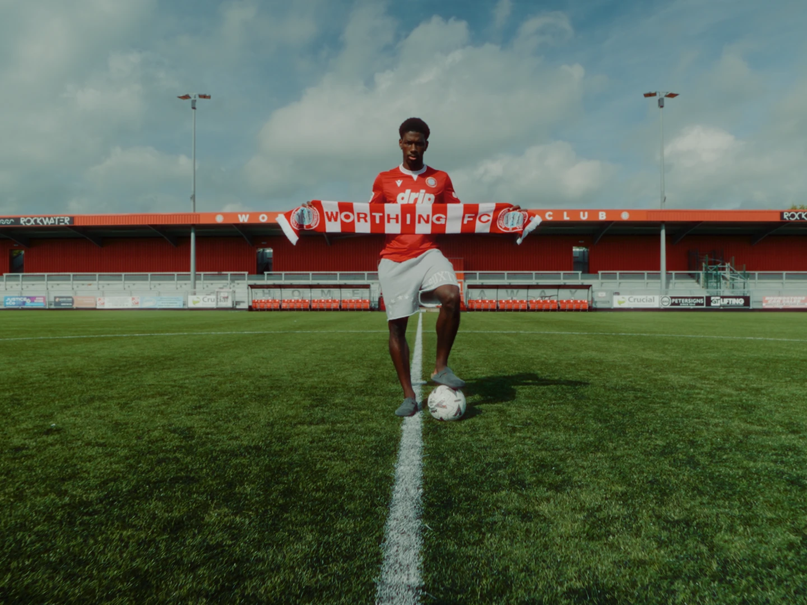
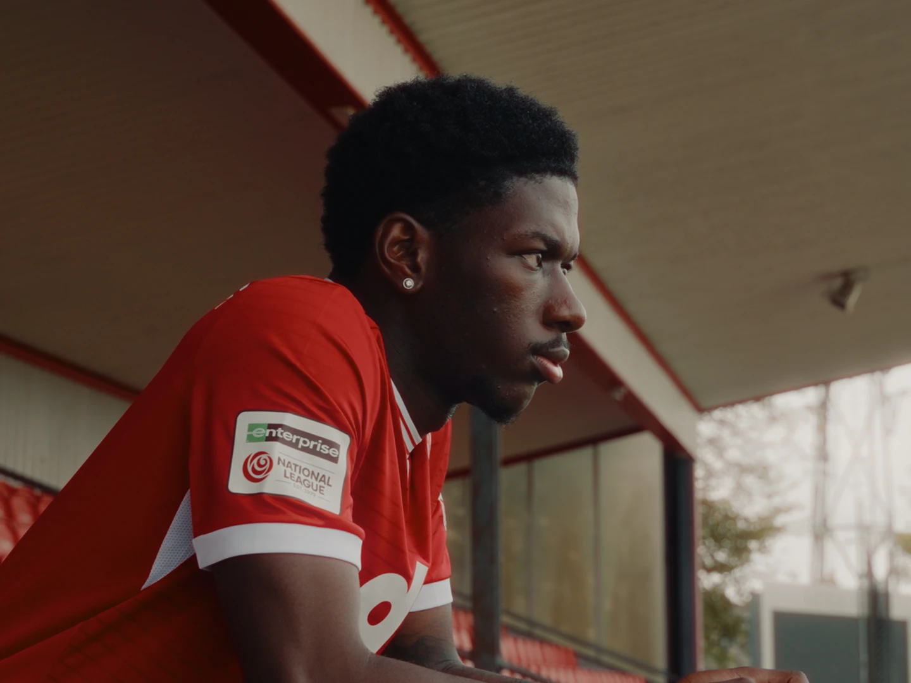
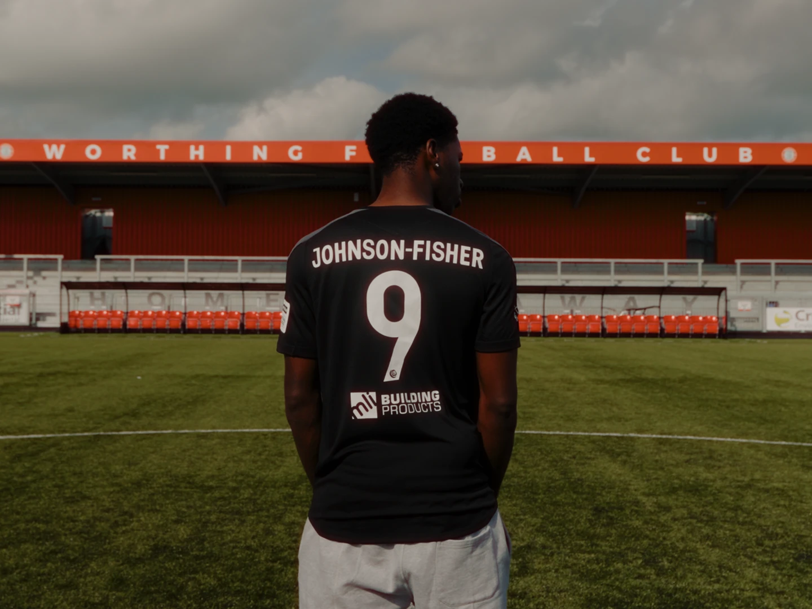
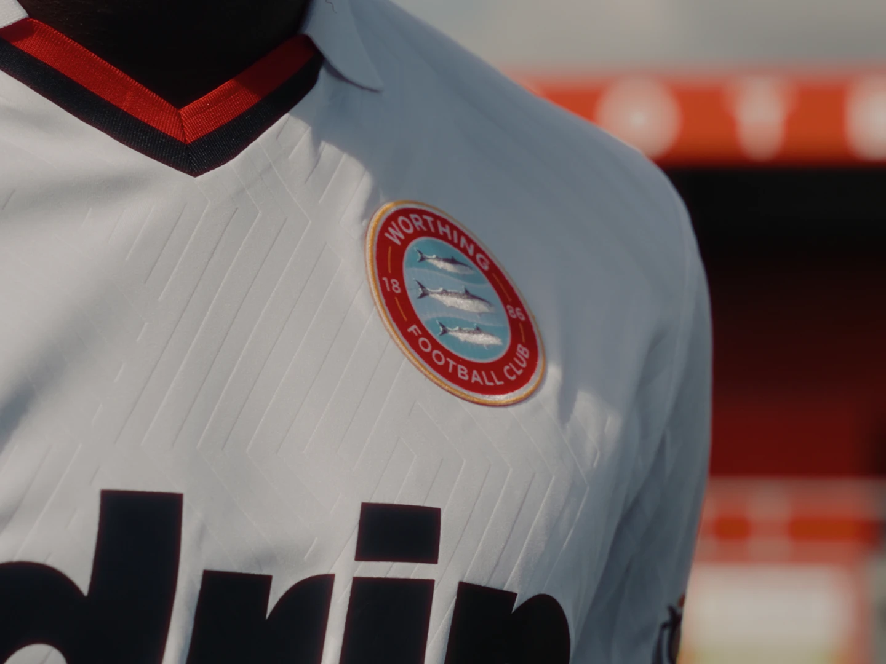
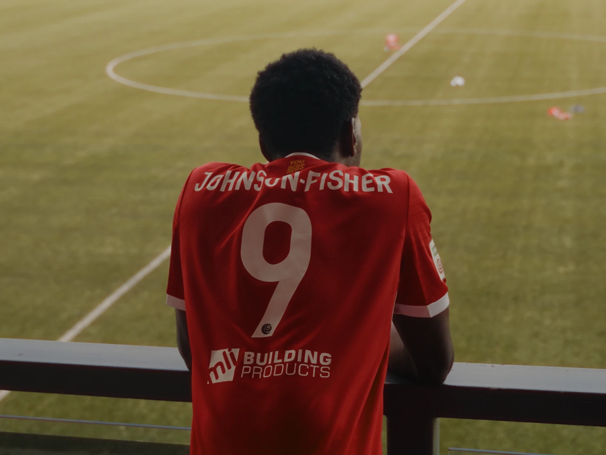
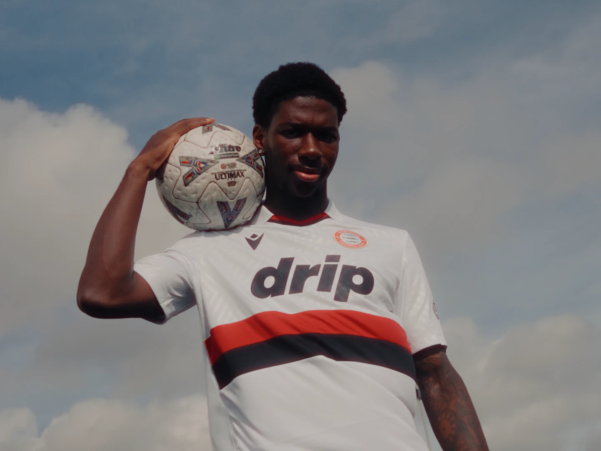
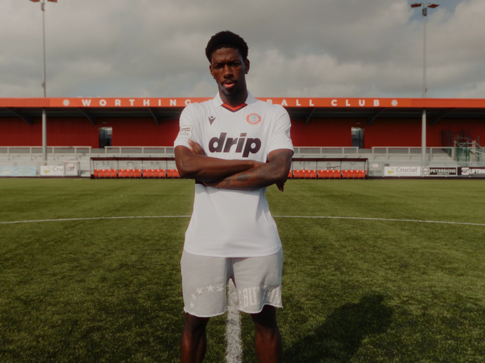

Featured project · Football
Worthing FC.
Our work with the club, from new signings to matchday.
01 · Player signing
Dominic Johnson-Fisher
Signing announcements all start to look the same: a handshake, a scarf, a quote about being delighted to join. For Dominic we wanted the club's new number 9 to feel like an arrival, not a press release.
The brief
Worthing FC called us in at short notice to announce the signing. They needed his arrival captured properly and ready to post while the news was still news.
What we made
We headed straight to the stadium and filmed a short interview with Dominic. Then we spent the rest of our time on the shots that make it feel like film rather than an announcement: Dominic looking out over the pitch from the stand, the name and number on his back, close-ups of the crest, and portraits across three different kits, all with a warm, filmic grade.
From that one visit the club got two separate edits: a punchy signing announcement and a standalone interview. We then put together this director's cut, bringing the two together with B-roll laid over the interview, so the whole story lands in under a minute.
The result
Both edits were with the club roughly three hours after we wrapped, and that includes getting back, offloading the footage and cutting it. Short notice in, same-day announcement out.






02 · Matchday
Worthing 3-0 Horsham
Matchday highlights for the club's socials. We covered the 1st team's home game against Horsham and caught all three goals in a 3-0 win.
The brief
Standard matchday content for social media: the goals, cut vertical and ready to post.
What we made
A highlight clip for each goal. Some of the goals were filmed from two angles, so the edits show the moment from more than one view instead of relying on a single wide shot.
The result
All three were with the club the next day, so the highlights went out while the win was still the talking point.
03 · Social trend
IMAX 70mm vs Standard
When The Odyssey came out, IMAX 70mm was everywhere, and clips comparing the full IMAX frame with a standard one became a trend of their own. We put Worthing FC's matchday through the same comparison.
What we made
A five-part carousel from the same game: the walkout, the team line-up, a set piece, action in the box and a goal kick. Each one starts in a standard widescreen frame, then opens up to the full height of the 70mm frame.
Why we did it
Jumping on a trend while it's live draws people in, and it gave us room to be creative and make something different from the usual matchday posts. Most clubs at Worthing's level don't have the creative or media resources for content like this, which is exactly why we wanted to do it.